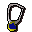
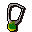

Davon's Amulet Store.
Inventory config
amuletshopRun by  Davon. Open in knowledge graph →
Davon. Open in knowledge graph →
Located in: Agility Arena
Stock
| Item | Stock | Value | Sells for |
|---|---|---|---|
| Holy symbol | 0 | 300 gp | 360 gp |
 Amulet of magic | 0 | 900 gp | 1080 gp |
 Amulet of defence | 0 | 1275 gp | 1530 gp |
| 0 | 2025 gp | 2430 gp | |
| 0 | 3525 gp | 4230 gp |
Shop sells at 120.0% of item value and buys at 90.0%.